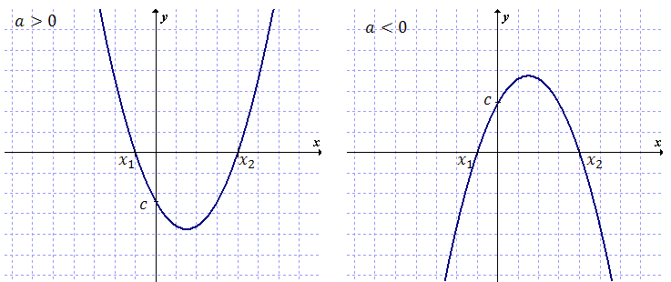

Funkcja kwadratowa zapisana w postaci ogólnej wygląda tak: \[ f(x)=ax^2+bx+c \]
gdzie \(a, b, c\) są współczynnikami liczbowymi i \(a \ne 0\).
Ze wzoru funkcji kwadratowej
danej w postaci ogólnej możemy od razu odczytać:
- czy ramiona paraboli są skierowane do góry (\(a > 0\)), czy do dołu (\(a <
0\)),
- punkt przecięcia paraboli z osią \(OY\), który ma współrzędne \((0, c)\).
Na przykład:  Na powyższych wykresach zaznaczono również
miejsca zerowe obu funkcji kwadratowych (oznaczone symbolami \(x_1\) oraz \(x_2\)). Mając wzór ogólnym
funkcji kwadratowej możemy łatwo obliczyć miejsca zerowe \(x_1\) i \(x_2\). Wystarczy najpierw obliczyć
deltę, korzystając ze wzoru: \[ \Delta =b^2-4ac \] Jeżeli delta wyszła większa od zera, to miejsca
zerowe istnieją i możemy je obliczyć korzystając ze wzorów: \[ \begin{split}
{x}_{1}&=\frac{-b-\sqrt{\Delta }}{2a}\\[6pt] {x}_{2}&=\frac{-b+\sqrt{\Delta }}{2a} \end{split} \] Chcąc
policzyć współrzędne wierzchołka W funkcji kwadratowej danej w postaci ogólnej, skorzystamy ze wzorów:
\[ W=\left ( \frac{-b}{2a}, \frac{-\Delta }{4a} \right ) \]